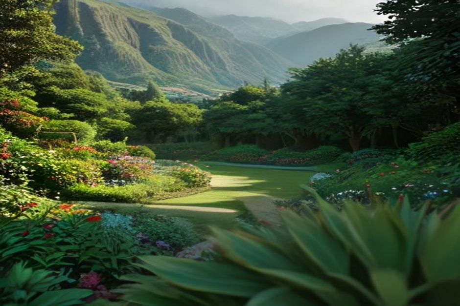
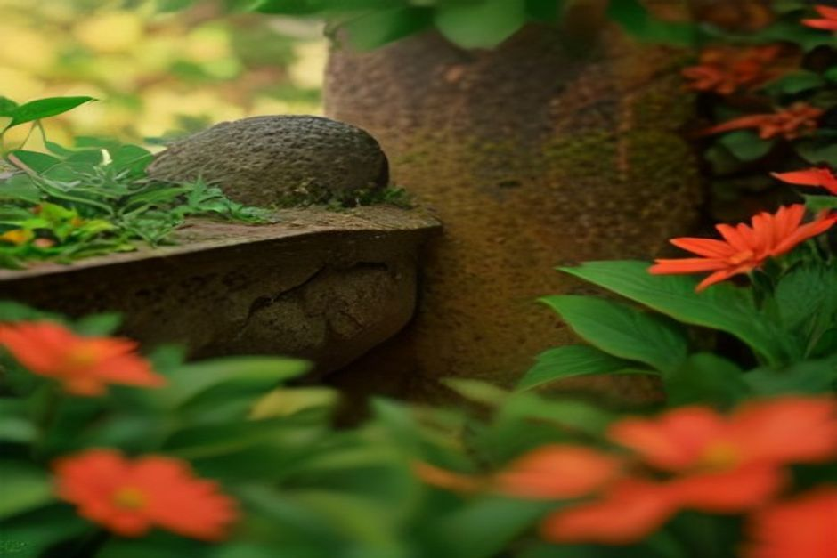

Madère se surnomme l'île du printemps éternel, et ce n'est pas un hasard : la chaleur subtropicale et l'humidité atlantique permettent à presque tout de pousser ici, des rhododendrons de l'Himalaya aux strelitzias d'Afrique. Voici les dix jardins qui méritent vraiment qu'on leur consacre du temps, classés selon ce qu'ils offrent.
1. Monte Palace Tropical Garden
Monte Palace est l'expérience de jardin la plus complète de Madère — 70 000 mètres carrés à flanc de colline au-dessus de Funchal, réunissant un jardin oriental, un lac peuplé de carpes koï, un mur d'azulejos portugais, une promenade en forêt de laurisylve et un musée présentant plus de 700 minéraux et pierres semi-précieuses. On y accède facilement par le téléphérique de Monte depuis la vieille ville, et le concert quotidien de midi « Music at the Monte », au bord du lac central, est une bonne raison de caler sa visite autour de la mi-journée.

2. Jardim Botânico da Madeira
Le Jardim Botânico de Funchal est construit sur des terrasses à flanc de falaise au-dessus de la ville, avec plus de 2 500 espèces exotiques et locales disposées dans des parterres denses et colorés — la section géométrique de cactus et de plantes succulentes est le point fort. La vue plongeante sur Funchal et la baie est l'un des meilleurs points de vue gratuits de l'île, même si l'accès au jardin lui-même est payant. Il se trouve à quelques minutes à pied du Jardim Orquídea et de la station du téléphérique, ce qui permet de combiner naturellement les deux.
3. Palheiro Gardens (Quinta do Palheiro)
Palheiro est l'anti-Monte Palace : un jardin de style anglais à 500 mètres au-dessus de Funchal, organisé autour de parterres à la française, de vastes pelouses, de promenades en sous-bois et de l'une des plus belles collections de camélias d'Europe. Il a été aménagé sur deux siècles par la famille Blandy, célèbre pour son vin de Madère, et garde l'allure d'un domaine privé plutôt que d'une étape touristique — on y vient autant pour le calme que pour les plantations.
4. Jardim Orquídea (Orchid Garden)
Un petit jardin sous serre, dense, à quelques minutes du Jardim Botânico, qui abrite plusieurs centaines d'espèces et d'hybrides d'orchidées aux côtés d'anthuriums, de broméliacées et de plantes carnivores. Il est assez compact pour être visité correctement en une demi-heure, ce qui en fait un complément facile plutôt qu'une destination à part entière.
5. Quinta das Cruzes Garden
Niché derrière la vieille ville de Funchal, le jardin du musée de la Quinta das Cruzes est un espace plus calme et plus sauvage, parsemé de vestiges archéologiques — encadrements de fenêtres et portes sculptés, récupérés sur des bâtiments historiques démolis dans la ville — sous un couvert de dragonniers et d'orchidées. C'est le choix idéal pour qui veut des jardins sans la foule de Monte ou du Jardim Botânico.
6. Jardim Municipal do Funchal
Le Jardim Municipal, près de l'Avenida Arriaga, est petit, gratuit, et c'est exactement là que s'installent les habitants — allées bordées de palmiers, kiosque à musique et ombre à cinq minutes de la cathédrale. Il ne prendra pas tout un après-midi, mais c'est le jardin de cette liste le plus facile à glisser dans une promenade dans la vieille ville.
7. Jardim de Santa Catarina
Un parc plus vaste et gratuit, en haut d'une falaise entre la vieille ville et la marina, avec vue sur la mer et la baie de Funchal, un petit lac, une chapelle et des parterres de fleurs qui changent au fil des saisons. Il est moins soigné que les jardins botaniques plus haut sur la colline, mais son emplacement — à quelques pas du port — en fait l'étape naturelle avant ou après une sortie en bateau.
8. Quinta Jardins do Lago
Un vrai jardin d'hôtel ouvert aux visiteurs extérieurs, organisé autour d'un canon du XVIIIe siècle et d'une série de bassins, avec des plantations tropicales qui rivalisent avec les jardins payants des environs. Moins connu que Palheiro, tout proche, mais qui mérite d'être combiné avec lui si vous êtes déjà dans ce coin des collines.
9. Fajã dos Padres
Pas un jardin d'agrément mais un jardin de travail — une étroite bande de terrasses de bananiers, de manguiers et de vignes au niveau de la mer, sous des falaises de 300 mètres, plantée par des prêtres jésuites il y a des siècles et toujours cultivée aujourd'hui. La plupart des visiteurs y accèdent par téléphérique depuis le sommet de la falaise ; nous pensons que la meilleure façon d'y arriver est par la mer, à quelques brasses du bateau, ce qui est exactement l'étape que nous intégrons au Day Trip de Chifbay au départ de Câmara de Lobos.
10. Les jardins forestiers de Ribeiro Frio
À 900 mètres d'altitude, près de la ferme aquacole à truites, les petits jardins d'agrément de Ribeiro Frio misent sur les fougères, les hortensias et les camélias, dans un climat radicalement différent de celui du littoral — frais, humide et ombragé par la laurisylve indigène. C'est moins un jardin-destination qu'une pause de verdure sur la route du belvédère de Balcões, mais le contraste avec les jardins côtiers de cette liste mérite le détour dans la même journée.

Madère n'a pas un grand jardin — elle en a une douzaine, chacun façonné par un microclimat différent à quelques centaines de mètres du précédent.
Si vous n'avez qu'une matinée, regroupez Monte Palace, le Jardim Botânico et le Jardim Orquídea — ils sont à quelques minutes les uns des autres sur la colline au-dessus de Funchal. Si vous avez plus de temps, réservez un après-midi au calme de Palheiro, et une journée entièrement différente aux terrasses de Fajã dos Padres, à voir de préférence depuis la mer.